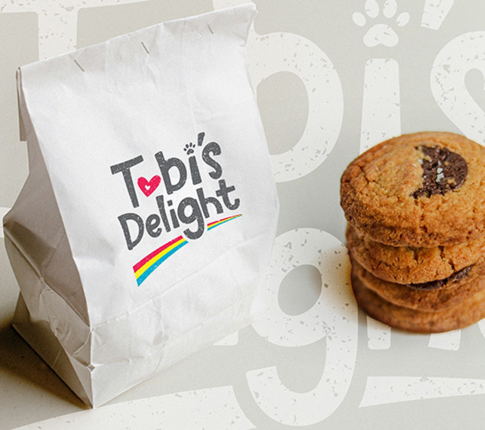
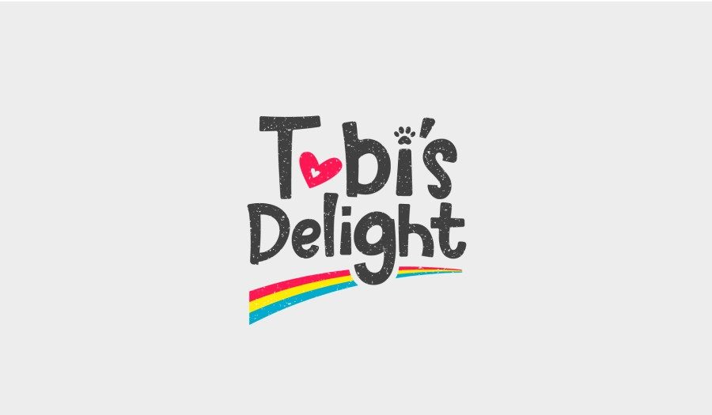
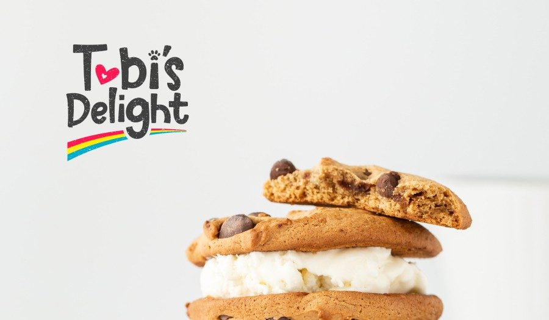
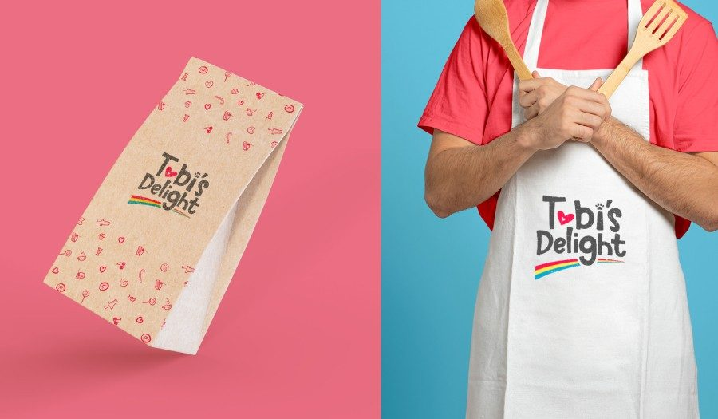

Creating a playful bakery identity inspired by a beloved pet
Tobi’s Delight

Tobi’s Delight is a pastry shop specializing in cookies, cakes, cupcakes, and other baked treats. The business was named after the client’s late dog, Tobi, giving the brand an emotional story beyond the products it sells. I created a logo that captures the joy of a neighborhood bakery while preserving Tobi’s memory through meaningful visual details.
Role
Brand and logo designer
Category
Branding
Tools
Adobe Illustrator, Adobe Photoshop

The challenge
The client wanted the identity to feel fun and playful, but it also needed to honor the memory behind the business.
Two elements were specifically requested:
- A heart representing the client’s love for Tobi.
- A visual detail that connects the identity to Tobi’s memory.
The central challenge was balancing these emotional requirements with the needs of a pastry brand. The result needed to feel joyful rather than sombre, remain easy to recognize, and communicate the warmth associated with freshly made treats.
The objective
The goal was to create a distinctive logo that could represent both the personality of the bakery and its personal origin story.
The identity needed to:
- Feel playful, welcoming, and handmade.
- Appeal to customers of different ages.
- Communicate affection without becoming overly sentimental.
- Include the requested heart and pet-inspired detail.
- Remain recognizable at different sizes.
- Give the business a memorable foundation for future branding.

The solution
The final logo combines several elements into one cohesive identity:
- A playful, hand-rendered wordmark.
- A heart representing affection and remembrance.
- A paw print connecting the brand to Tobi.
- A textured finish suggesting handmade products.
- Bright accent colors that communicate celebration and delight.
- A sweeping underline that adds motion and completes the composition.
Instead of treating the client’s requested symbols as decorations, the design incorporates them into the structure of the name. This makes the story feel inseparable from the brand itself.
Outcome
The completed identity gives Tobi’s Delight a warm and recognizable personality while preserving the personal meaning behind its name.
The design:
- Communicates the playful character of the pastry shop.
- Incorporates the client’s required heart and pet reference.
- Honors Tobi’s memory in a positive and celebratory way.
- Feels appropriate for a handcrafted bakery business.
- Creates a distinctive mark that can be recognized without additional imagery.
- Provides a visual foundation for future packaging, signage, menus, and digital materials.
The result is a logo designed to make customers feel the same qualities associated with the business: affection, happiness, creativity, and delight.
